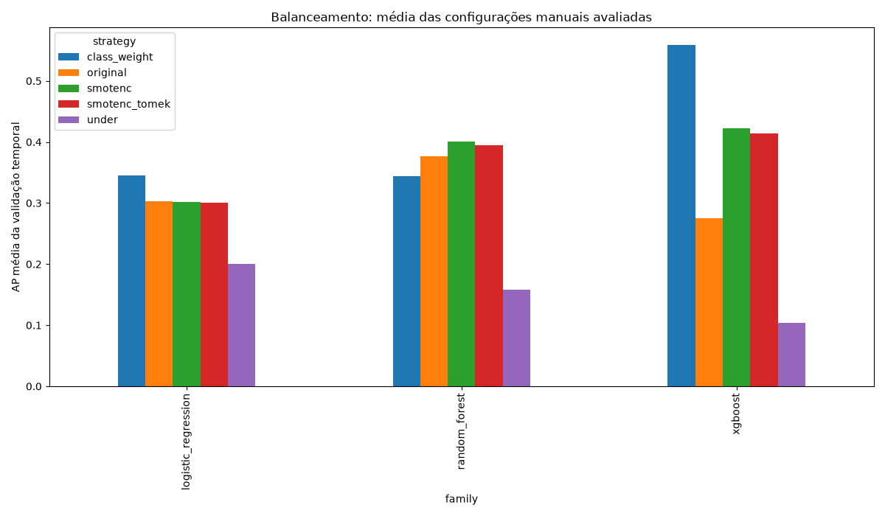
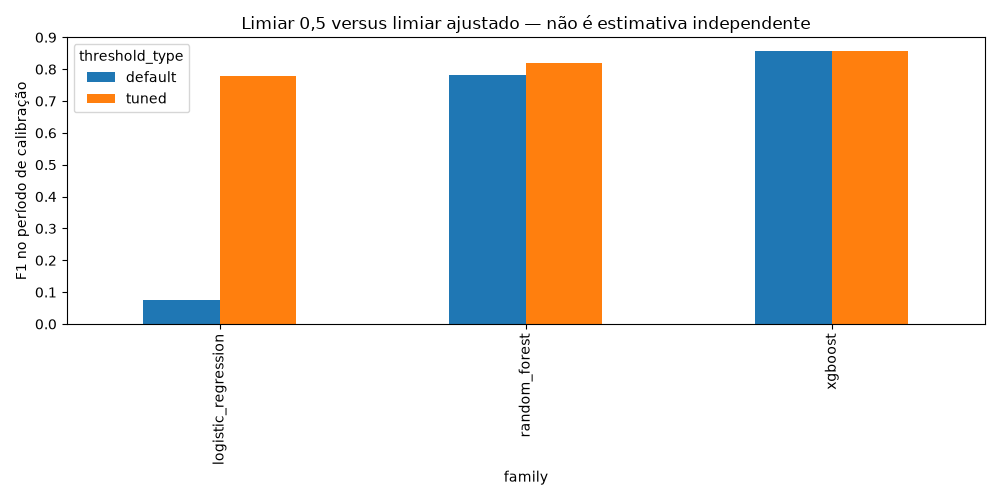
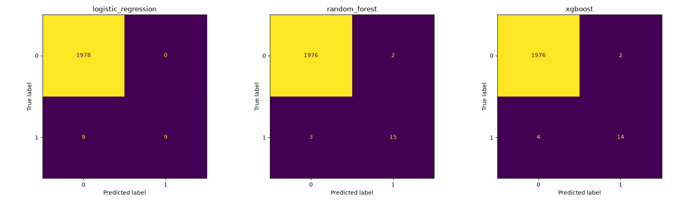
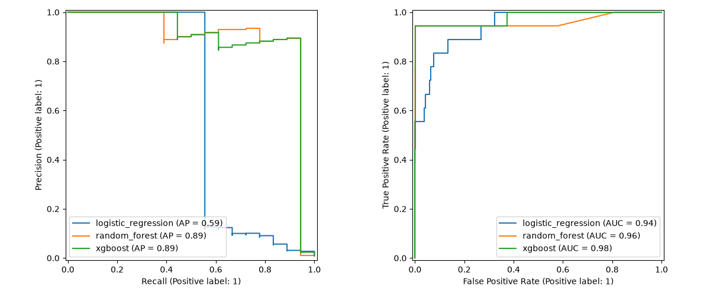

Campeão escolhido exclusivamente pela AP da validação temporal: xgboost. Limiar escolhido por F1 no período de calibração. O teste é descritivo. Escores não são probabilidades calibradas. Os cenários têm alvos diferentes; valores sinalizados não demonstram dinheiro efetivamente protegido.
| partition | rows | positives | prevalence | start | end |
|---|---|---|---|---|---|
| development | 6983 | 47 | 0.006731 | 2025-06-20T18:55:56+00:00 | 2025-08-02T19:56:56+00:00 |
| calibration | 997 | 11 | 0.011033 | 2025-08-02T20:04:56+00:00 | 2025-08-08T11:29:56+00:00 |
| test | 1996 | 18 | 0.009018 | 2025-08-08T11:43:57+00:00 | 2025-08-20T18:44:56+00:00 |
| scenario | run_id | family | candidate | threshold | accuracy | precision | recall | f1 | average_precision | roc_auc | tn | fp | fn | tp |
|---|---|---|---|---|---|---|---|---|---|---|---|---|---|---|
| 10k | 20261123T225344_36cb16d3 | logistic_regression | logistic_regression__class_weight__default | 0.993508 | 0.995491 | 1.000000 | 0.500000 | 0.666667 | 0.592050 | 0.944107 | 1978 | 0 | 9 | 9 |
| 10k | 20261123T225344_36cb16d3 | random_forest | random_forest__smotenc__default | 0.540000 | 0.997495 | 0.882353 | 0.833333 | 0.857143 | 0.893457 | 0.961058 | 1976 | 2 | 3 | 15 |
| 10k | 20261123T225344_36cb16d3 | xgboost | xgboost__class_weight__adjusted | 0.925439 | 0.996994 | 0.875000 | 0.777778 | 0.823529 | 0.889686 | 0.978851 | 1976 | 2 | 4 | 14 |



